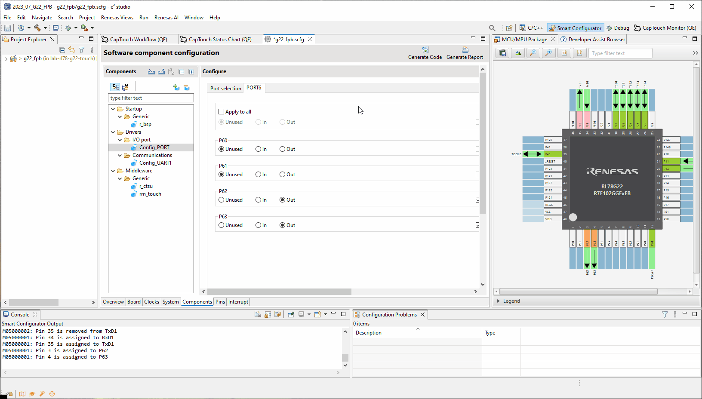

Here we will guide you through configuring a device & it's peripherals on the RL78/G22 Fast Prototyping Board (FPB).
For more information on the smart configurator please consult the e2studio users manual and
Smart
Configurator User Manual (RL78 API Reference).
3.1 Clocks & Supply
Navigate to the Clocks Tab & perform the following:
- Set the Operating mode to High-speed main mode 1.8(V)~5.5(V)
This sets the operating mode/voltage of the device used for things like flash programming & in other back end operations of the smart configurator. - Set the EVDD setting to 1.8 V ≤ EVDD 5.5 ≤ V
This sets the operating voltage of EVDD, as above. - Enable the low-speed on-chip oscillator as the source clock for fSXP (sub-system clock)
and disable XT1.
This uses the LOCO as the fSXP - a crystal is not fitted on this board - therefore it cannot be used.
3.2 CTSU Driver
Navigate to the Components Tab.
This section is where the "magic" happens. The peripheral functions & middlewares can be included,
removed and configured from this single location.
The process outlined here for adding and configuring the CTSU (Capacitive Touch Sensing Unit) -
is the same one used for all components.
It is in the configuration of the peripherals after adding them when the process/layout between the
peripherals will differ.
- First click the add components button
- Here you will be presented with the Software Component Selection dialog - you can use the
filters along the top or simply scroll to find the component of interest.
We will select the Capacitive Sesning Unit Driver component - Click Finish
The CTSU driver is the driver controlling the CTSU2L peripheral on the RL78/G23.
We will:
- Use the TSCAP pin as the powersupply to the capacitive touch current drive circuit.
- Use the TS23 pin which is connected to capacitive touch button 2.
- Use the TS24 pin which is connected to capacitive touch button 1.
- Use TS20, TS21 & TS22 pins which is connected to the capacitive touch slider.
- Configure the driver to use the DTC to handle the Data transfer of INTCTSUWR &
INCTSURD.
This automates the configuration of the internal CTSU registers during a scan, avoiding using the CPU.
3.3 Touch Middleware
Now using the above mechanism, do the following to include the Touch Middleware component.
The touch middleware contains the tuning & monitoring code as well as the filtering parameters
which we will use the QE tools to interact with.
The middleware sits on top of the CTSU driver and controls it, abstracting the user away from the
hardware.
Meaning the user doesn't need to interact with the CTSU driver in the code.
Once added, please make the following settings:
- Support QE monitor using UART: Enable - this allows us to monitor the internals of the touch middleware using UART.
- Support QE tuning using UART: Enable - this allows us to tune the internals of the touch middleware and CTSU driver using UART.
- UART channel: UART1 - this is the UART channel we will be using on the hardware.
3.4 UART
Now we will add the UART driver which will be use in the tuning and monitoring of the capactive touch peripheral.
The following settings must be made:
- Operation: Transmission/Reception
- Resource: UART1
- Click Finish
Now fix the operation to:
- Tranmission tab
- Clock source: fCLK/2
- Transfer rate setting: 115200
- Reception tab
- Clock source: fCLK/2
- Transfer rate setting: 115200
3.5 Port
The Ports component controls the GPIO ports for things like LED control and display I/O, please do the following:
- Add the Ports component
- Resource: PORT
Make the following changes to the configuration:
- PORT6 tab: Set the following to Output & Output 1;
P62, P63
These are the LED control pins.
3.6 Generate Code
Now click Generate Code.
What happens here is the src/smc_gen folder is populated with code reflecting the settings made in the smart configurator.